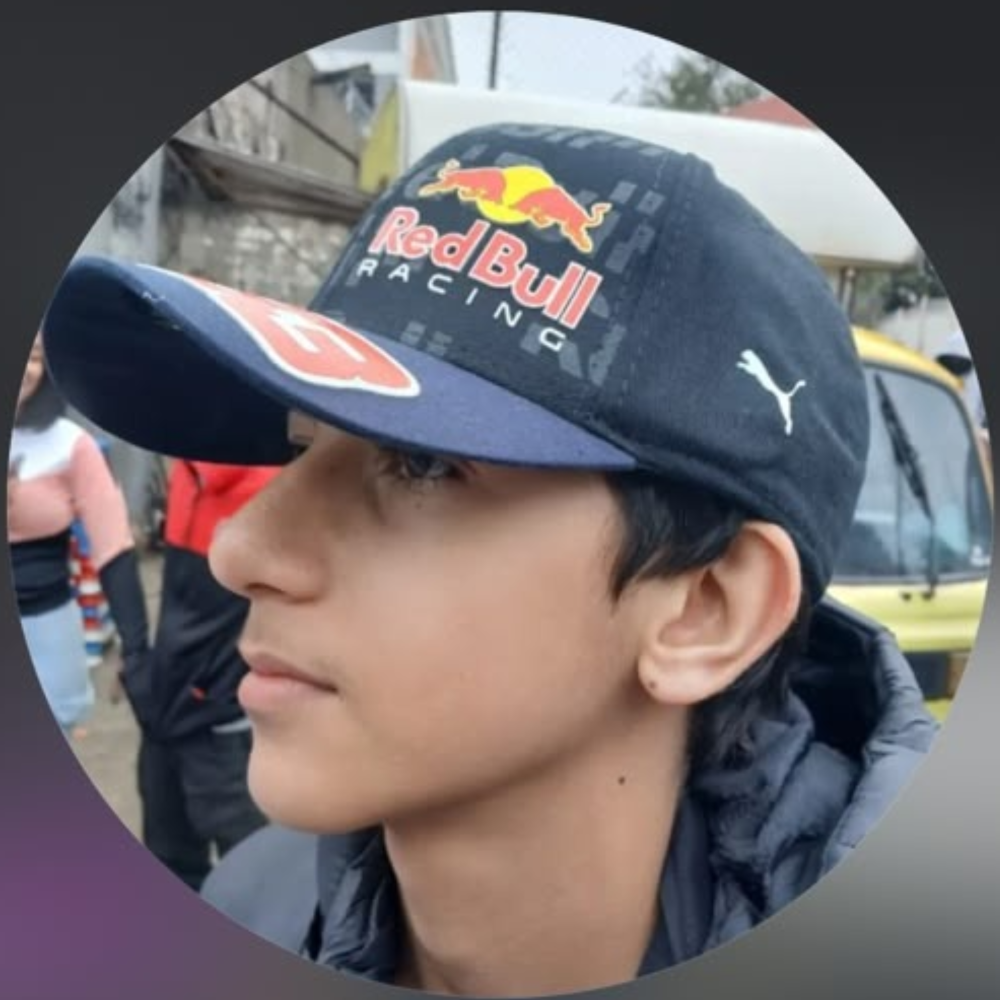
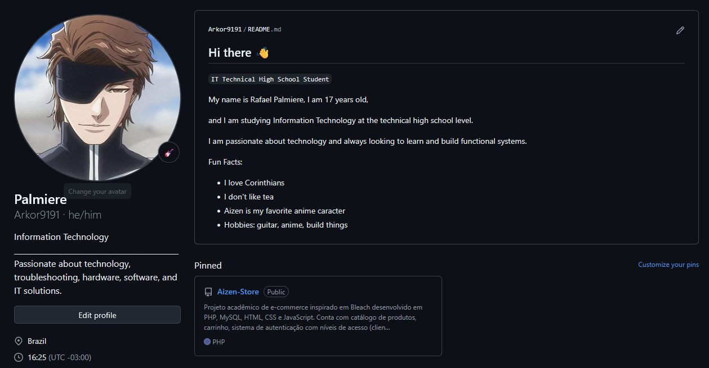
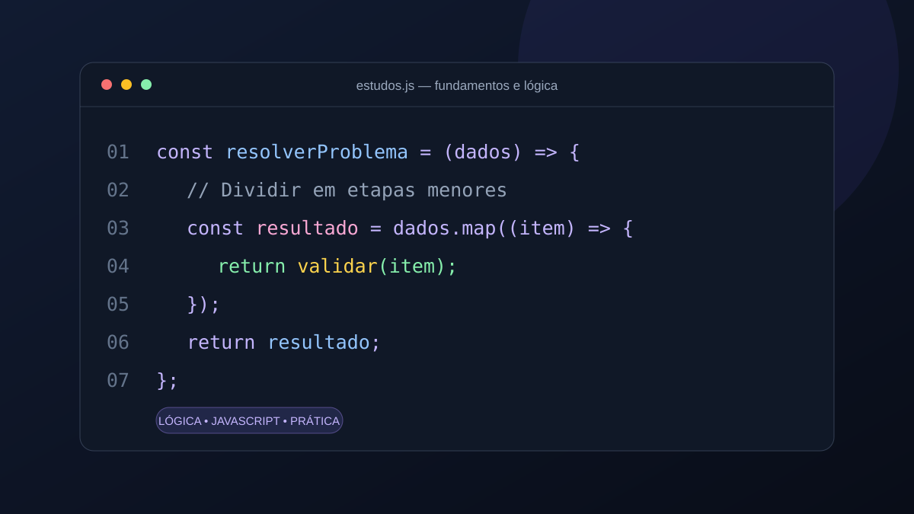
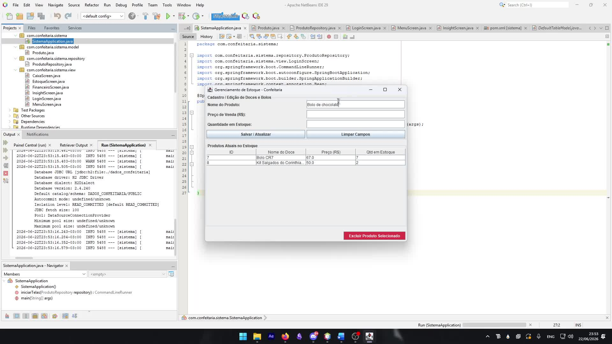

Hard skills
HTML5, CSS3, JavaScript, Bootstrap, PHP, MySQL, lógica de programação, manutenção e diagnóstico de hardware e software.

TECNOLOGIA • CRIATIVIDADE • APRENDIZADO
Estudante de Tecnologia da Informação | Desenvolvedor Front-end
Tenho 17 anos e estudo Tecnologia da Informação no ensino médio técnico. Sou apaixonado por tecnologia e gosto de aprender, construir sistemas funcionais e transformar ideias em soluções digitais.
01 — QUEM SOU
Tecnologia é o ponto de encontro entre curiosidade, lógica e vontade de criar.
Sou estudante de Tecnologia da Informação no ensino médio técnico no Senac Nações Unidas, tenho interesse em desenvolvimento Front-end. Gosto de entender como os sistemas funcionam, desde a interface que as pessoas utilizam até a lógica que acontece por trás dela.
Desenvolvo minhas habilidades por meio de projetos práticos, experimentação e aprendizado contínuo. Também gosto de computadores, diagnóstico de problemas de hardware e software e de encontrar soluções práticas para desafios do dia a dia.
CONJUNTO DE HABILIDADES
HTML5, CSS3, JavaScript, Bootstrap, PHP, MySQL, lógica de programação, manutenção e diagnóstico de hardware e software.
Trabalho em equipe, comunicação, adaptabilidade, resolução de problemas, atenção aos detalhes, curiosidade, organização e vontade de aprender.
Torcedor do Corinthians, fã de anime (Aizen é o meu personagem favorito), guitarra e construir coisas.
02 — FORMAÇÃO ACADÊMICA
Como as disciplinas do Ensino Médio contribuem para minha lógica de programação.
As Ciências Humanas ajudam a compreender as pessoas, a sociedade e o contexto. Essa visão é importante ao criar interfaces: um software deve comunicar com clareza, respeitar diferentes usuários e resolver necessidades reais. História e estudos sociais também me fazem refletir sobre as consequências da tecnologia.
As Ciências da Natureza desenvolvem observação, formulação de hipóteses e raciocínio baseado em evidências. Em programação, aplico esse processo para investigar erros, testar soluções e entender como hardware, energia e sistemas digitais se relacionam.
A Matemática fortalece o raciocínio lógico, a abstração e a capacidade de dividir problemas complexos em etapas menores. Essas habilidades aparecem em algoritmos, condições, laços de repetição, organização de dados e cálculos realizados por aplicações.
As Linguagens ensinam clareza, interpretação e comunicação. Elas ajudam a compreender documentações técnicas, escrever textos objetivos para interfaces, nomear variáveis de forma consistente e explicar soluções para colegas e usuários.
03 — PESQUISA E TECNOLOGIA
Temas atuais que ampliam minha visão sobre desenvolvimento e inovação.
A cibersegurança protege dispositivos, redes, aplicações e dados contra acessos não autorizados e ataques digitais. Ela reúne práticas como autenticação, criptografia, programação segura, atualizações, backups e monitoramento. Para quem desenvolve software, a segurança deve ser considerada desde o início do projeto.
Blockchain é um registro digital distribuído no qual informações são agrupadas em blocos e conectadas por técnicas criptográficas. Uma rede de participantes valida as atualizações por mecanismos de consenso. Pode apoiar rastreabilidade e aplicações descentralizadas, mas exige atenção a desempenho, consumo de energia e governança.
A automação utiliza softwares e máquinas para executar tarefas com pouca intervenção manual. A robótica combina mecânica, eletrônica, sensores e programação para que máquinas interajam com o mundo físico. Essas tecnologias podem aumentar a precisão e a produtividade, mantendo a supervisão humana e a segurança como prioridades.
Edge Computing processa dados próximo ao local em que são gerados, em vez de enviar tudo para um data center distante. Isso pode reduzir a latência, economizar banda e acelerar respostas em sensores industriais, câmeras e veículos conectados. Também traz desafios de segurança e gerenciamento de dispositivos distribuídos.
04 — PORTFÓLIO DE DESENVOLVIMENTO
Experiências acadêmicas, estudos e soluções construídas durante minha formação.

E-COMMERCE · PROJETO ACADÊMICO
Loja virtual temática com busca de produtos, detalhes dos itens, carrinho por sessão, autenticação e área administrativa para gerenciar produtos e pedidos.
HTML · CSS · Bootstrap · JavaScript · PHP · MySQL
Repositório original
ESTUDOS · EM DESENVOLVIMENTO
Repositório de exercícios e pequenos experimentos que documentam minha evolução nos fundamentos da programação e em diferentes formas de resolver problemas.
Lógica de programação · JavaScript · GitHub
Repositório original
APLICAÇÃO DESKTOP · PROJETO ACADÊMICO
Aplicação desktop em Java para cadastrar e editar produtos e acompanhar o estoque em um fluxo simples de gerenciamento para uma confeitaria.
Java · Apache NetBeans · CRUD
Outros estudos e códigos estão reunidos no meu perfil do GitHub ↗.
05 — CONTATO
Tem alguma ideia, dúvida ou oportunidade? Envie uma mensagem pelo formulário. Ela será salva neste navegador e encaminhada por e-mail.
Acompanhe meus projetos no GitHub ↗